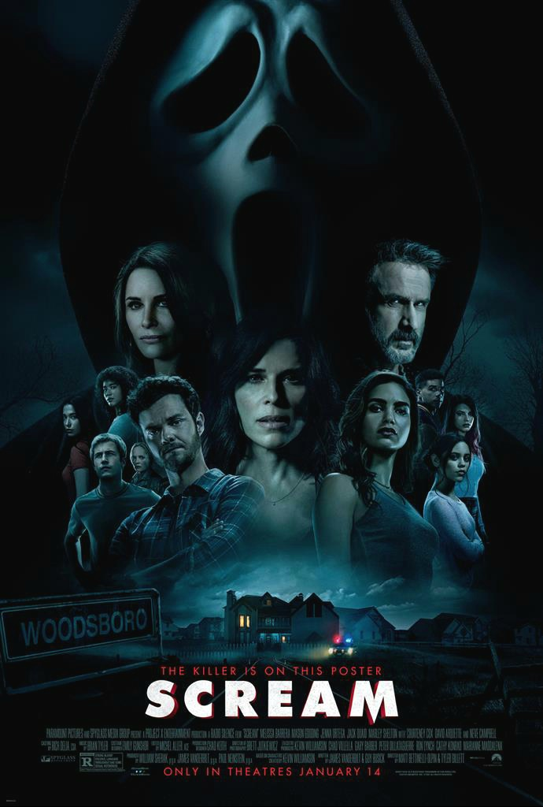

Alien
A Quiet Place

Egy családnak a legnagyobb csendben kell rejtőzködnie a bolygónkat megszálló idegen lények elől.
American Psycho

2000-ben bemutatott amerikai független bűnügyi filmdráma Mary Harron rendezésében.
The Thing

1982-ben bemutatott amerikai sci-fi horrorfilm John Carpenter rendezésében,
Scream

1996-ban bemutatott amerikai tinihorror, Wes Craven rendezésében.